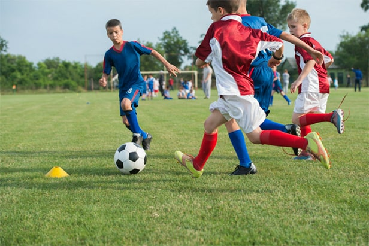
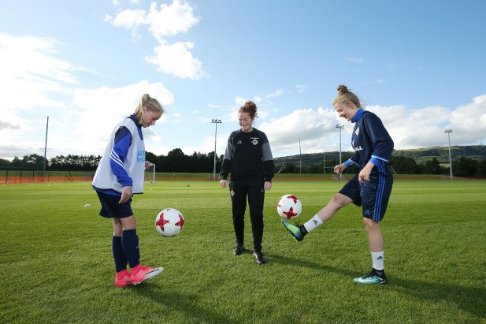

Benefits of Sports
Taking part in sport can help us feel fitter, healthier and mentally strong, and that is just the start of it. Sport can also be fun, especially when played as part of a team or with family or friends.
let's know some benefits of Playing Sport
- 1-Better Sleep
-
Fast Company suggests that exercise and sport triggers chemicals in the brain that can make you feel happier and relaxed. Team sports provide a chance to unwind and take part in an activity that improves your fitness. If you play sports outside, you can benefit from fresh air which is said to promote a good night’s sleep.
- 2-A Strong Heart
- Your heart is a muscle and needs frequent exercise to help it keep fit and healthy. A healthy heart can pump blood efficiently around your body. Your heart will improve in performance when it is regularly challenged with exercise. Stronger hearts can improve overall health of the body.
- 3- New Connections
- Sport brings together a mixture of people from different communities, backgrounds, religions and beliefs. Sport can offer a new way to meet others that you may not interact with day to day. As a result, you can make new friends. And who knows, playing a sport might even open new career and business opportunities for you.

- 4- Improved Lung Function
-
Regular sport causes more oxygen to be drawn into the body with carbon monoxide and waste gases expelled. This increases the lung capacity during sport, improving lung function and efficiency.
- 5- Increased Confidence
-
By training frequently and working towards seasonal goals you can build your confidence and abilities. This is especially noticeable through tournaments and matches where you and your team put your skills to the test. Small, incremental achievements throughout the year can build personal confidence over time, giving you the ability to take on new projects and assignments at work with your new-found confidence.
- 6- Reduces Stress
-
When you are physically active your mind gets a chance to unplug from daily stresses and strains of life. Physical exercise reduces the stress hormones in your body and stimulates the release of endorphins. These endorphins may give you more energy and focus for whatever life has.
- 7- Sport Builds Leaders
-
All sport teams need leaders to show the way and help develop new or younger team members. An emergentics study has found a correlation between playing sports and strong leadership qualities. Sports enable people to develop a ‘team mindset’ whether its winning, losing or training together.

- 8- Develop Stronger Relationships
-
Sports enables you to build better relationships with people you may be aware of, but not know personally. Through frequent sport you can get to know a lot about an individual’s personality, their strengths and weaknesses. Sport with colleagues is a good opportunity to build better relationships and networks that may help you in your job.
- 9- Sport aids the healthy development of children
-
Children who play sports develop stronger bones and muscles, leading to a smaller chance of physical injury. Physical exercise before the onset of puberty has been identified by a New Zealand study as a way of reaching peak bone mass, enabling children to become stronger – a great foundation for future growth.
- 10- Sport improves your concentration
-
Regular physical activity helps keep your key mental skills sharp as you age. This includes sharp thinking, learning, and using good judgment. Research has shown that doing a mix of aerobic and muscle strengthening activities is especially helpful.
Participating in this kind of activity three to five times a week for at least 30 minutes can provide these mental health benefits, which will last as you age.